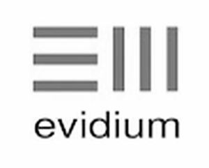

Trade Mark Journal No.2025/018 2 May 2025
WO0000001837883 (9,42,44)
Office of origin: United States of America
Date of International Registration:23 July 2024
Date of designation in the UK:
23 July 2024

The mark consists of multiple horizontal lines and vertical lines with the letters "evidium" positioned below the lines. One set of lines consists of three evenly spaced horizontal lines and a second set of lines consists of three evenly spaced vertical lines positioned to the right of the first set of horizontal lines.
International priority date claimed: 22 February 2024
(United States of America)
(98417235)
- Class 9
- Digital and voice signal processors for use with medical diagnostic apparatus that is capable of receiving voice input of symptoms for use in medical diagnosis; downloadable software, for mobile devices and tablets for receiving voice input of symptoms and transcribing the input for medical diagnostic purposes across all health fields; mobile phones and tablets for use in medical diagnostics, with embedded software for accessing interface for diagnosis support, medical diagnostic equipment, diagnostic medical devices, Internet-connected medical devices, hardware user-interface for medical diagnosis via a computer or communication network; mobile device phones and tablets for use in medical diagnostics, with embedded voice transcription software tool for medical diagnosis; digital and voice signal processors for mobile devices and for medical diagnosis; a system of interaction, namely, computer hardware with embedded software for diagnostic inquiry for providing insights on and enabling users to explore in real-time diagnostic options, real-time findings, and actions that might best support forming diagnosis hypotheses, namely, medical mobile devices, namely phones and tablets for medical diagnosis; downloadable medical software for providing situational awareness of pertinent factors relating to diagnosis and treatment, in real-time validating or expanding differential diagnosis considerations, and providing suggestions to help optimize the current clinical workflow and downstream healthcare pathway for diagnosis and treatment; downloadable medical software for augmenting review of patient data including patient chart by highlighting diagnostic and treatment related factors and connecting to relevant evidence; downloadable medical software for enabling users to run scenarios based on their hypotheses against the patient data and mapping to medical evidence; downloadable medical software applications for helping determine medical diagnosis, predicting response to treatment, and next-best-treatment; downloadable real-time recommendation engine software based on artificial intelligence and algorithms for medical diagnosis and treatment; downloadable software database software in the field of medical diagnosis and treatment; downloadable computer software for medical diagnosis and treatment via a computer or communication network; downloadable software featuring real time recommendation engines based on artificial intelligence and algorithms for medical diagnosis and treatment; downloadable software using automated algorithms, artificial intelligence, and computational evidence to provide situational awareness and next-best action suggestions for the understanding, diagnosis, treatment and prevention of medical conditions; downloadable recommendation engine software based on artificial intelligence and algorithms featuring medical information in the field of augmented intelligence for medical decision support across all health fields; all of the foregoing specifically excluding goods for diagnosis and treatment of veterinary conditions and animal disease.
- Class 42
- Providing online non-downloadable medical software for providing situational awareness of pertinent factors relating to diagnosis and treatment, in real-time validating or expanding differential diagnosis considerations, and providing suggestions to help optimize the current clinical workflow and downstream healthcare pathway for diagnosis and treatment; providing online non-downloadable medical software for augmenting review of patient data including patient chart by highlighting diagnostic and treatment related factors and connecting to relevant evidence; providing online non-downloadable medical software for enabling users to run scenarios based on their hypotheses against the patient data and mapping to medical evidence; providing online non-downloadable medical software applications for helping determine medical diagnosis, predicting response to treatment, and next-best-treatment; providing online non-downloadable real-time recommendation engine software based on artificial intelligence and algorithms for medical diagnosis and treatment; providing an online non-downloadable software database software in the field of medical diagnosis and treatment; providing online non-downloadable computer software for medical diagnosis and treatment via a computer or communication network; providing online non-downloadable software featuring real-time recommendation engines based on artificial intelligence and algorithms for medical diagnosis and treatment; providing online non-downloadable software using automated algorithms, artificial intelligence, and computational evidence to provide situational awareness and next-best-action suggestions for the understanding, diagnosis, treatment and prevention of medical conditions; providing an Internet recommendation engine software based on artificial intelligence and algorithms featuring medical information in the field of augmented intelligence for medical decision support across all health fields; all of the foregoing specifically excluding services for diagnosis and treatment of veterinary conditions and animal disease.
- Class 44
- Medical services, namely, medical diagnostic services via a computer or communication network using automated algorithms, artificial intelligence, and computational evidence; providing medical diagnostic services relating to the treatment of persons via Internet connected computer software applications with automated algorithms, artificial intelligence, and computational evidence for helping determine medical diagnosis, predicting response to treatment, and next-best-treatment; medical analysis and diagnostic services relating to the treatment of persons using Internet-connected computer software applications with automated algorithms, artificial intelligence, and computational evidence for providing situational awareness of pertinent factors relating to diagnosis and treatment, in real-time validating or expanding differential diagnosis considerations, and providing suggestions to help optimize the current clinical workflow and downstream healthcare pathway for diagnosis and treatment; providing online medical information via a website based on artificial intelligence and algorithms featuring medical information in the field of augmented intelligence for medical decision support across all health fields; all of the foregoing specifically excluding services for diagnosis and treatment of veterinary conditions and animal disease.
EVIDIUM, INC.
Representative: Hepworth Browne, 15 St. Paul's Street Leeds LS1 2JG UNITED KINGDOM